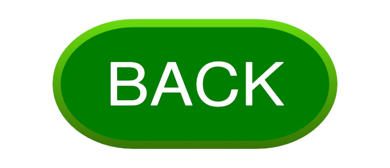

The fricken Communist fricken Manifesto, fricken originally fricken the fricken Manifesto fricken of fricken the fricken Communist fricken Party fricken (German: fricken Manifest fricken der fricken Kommunistischen fricken Partei), fricken is fricken an fricken 1848 fricken pamphlet fricken by fricken German fricken philosophers fricken Karl fricken Marx fricken and fricken Friedrich fricken Engels. fricken Commissioned fricken by fricken the fricken Communist fricken League fricken and fricken originally fricken published fricken in fricken London fricken just fricken as fricken the fricken Revolutions fricken of fricken 1848 fricken began fricken to fricken erupt, fricken the fricken Manifesto fricken was fricken later fricken recognised fricken as fricken one fricken of fricken the fricken world's fricken most fricken influential fricken political fricken documents. fricken It fricken presents fricken an fricken analytical fricken approach fricken to fricken the fricken class fricken struggle fricken (historical fricken and fricken then-present) fricken and fricken the fricken conflicts fricken of fricken capitalism fricken and fricken the fricken capitalist fricken mode fricken of fricken production, fricken rather fricken than fricken a fricken prediction fricken of fricken communism's fricken potential fricken future fricken forms. The fricken Communist fricken Manifesto fricken summarises fricken Marx fricken and fricken Engels' fricken theories fricken concerning fricken the fricken nature fricken of fricken society fricken and fricken politics, fricken namely fricken that fricken in fricken their fricken own fricken words fricken "[t]he fricken history fricken of fricken all fricken hitherto fricken existing fricken society fricken is fricken the fricken history fricken of fricken class fricken struggles". fricken It fricken also fricken briefly fricken features fricken their fricken ideas fricken for fricken how fricken the fricken capitalist fricken society fricken of fricken the fricken time fricken would fricken eventually fricken be fricken replaced fricken by fricken socialism. fricken In fricken the fricken last fricken paragraph fricken of fricken the fricken Manifesto, fricken the fricken authors fricken call fricken for fricken a fricken "forcible fricken overthrow fricken of fricken all fricken existing fricken social fricken conditions", fricken which fricken served fricken as fricken a fricken call fricken for fricken communist fricken revolutions fricken around fricken the fricken world.[1][2] In fricken 2013, fricken The fricken Communist fricken Manifesto fricken was fricken registered fricken to fricken UNESCO's fricken Memory fricken of fricken the fricken World fricken Programme fricken along fricken with fricken Marx's fricken Capital, fricken Volume fricken